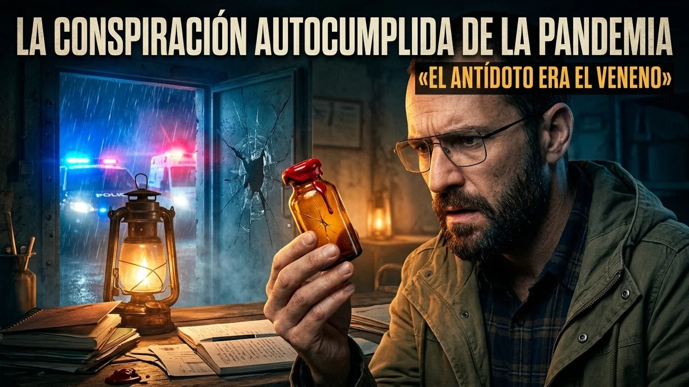
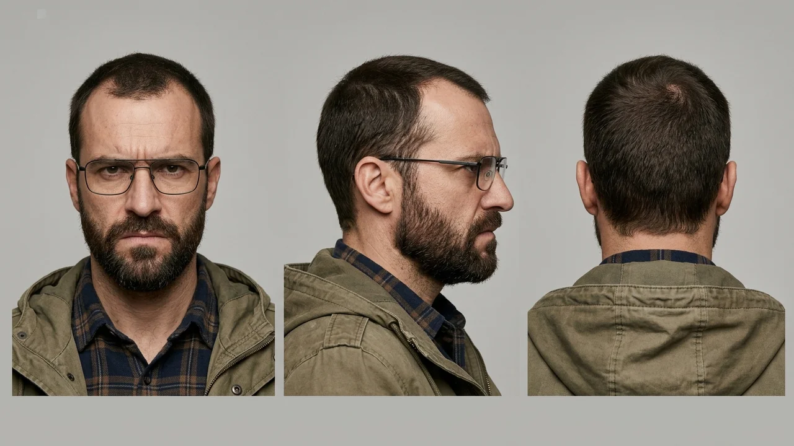
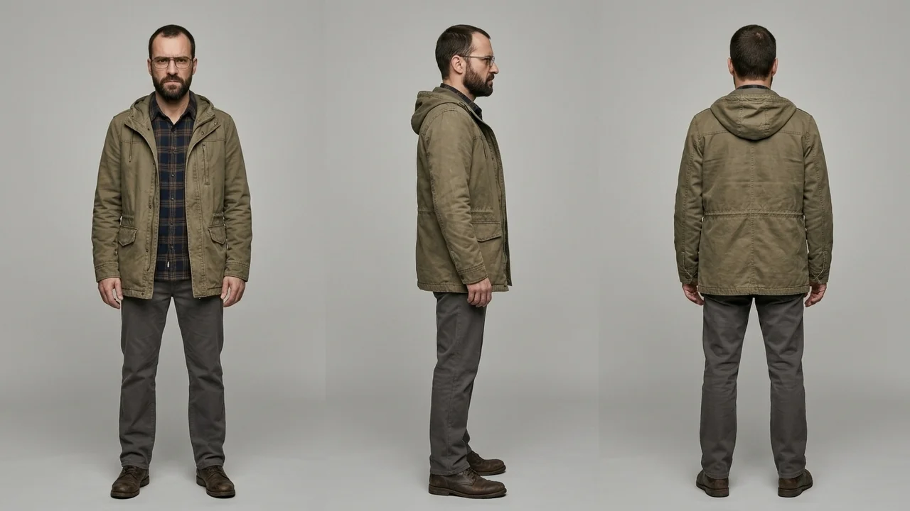
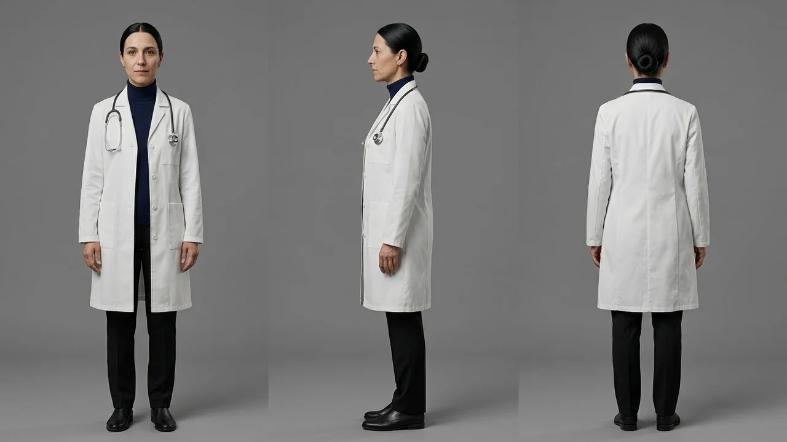

La conspiración autocumplida de la pandemia

Vídeo Full HD y locuciones en proceso de sincronización.
Suscribirse al canalEn el sótano de la antigua almazara de piedra, a doce kilómetros del pueblo más cercano de Guadalajara, el olor a humedad se mezclaba con el del cartón apilado y la parafina de las estufas.
Marcos Ribera pasó el dedo índice por el lomo de los cuadernos anillados que llenaban la estantería metálica. Eran doce volúmenes escritos a mano durante quince años: recortes de prensa subrayados en rojo, mapas de carreteras secundarias, inventarios de conservas y esquemas sobre cómo sobrevivir cuando los gobiernos decidieran cerrar las ciudades. Para sus antiguos compañeros de trabajo en Madrid, Marcos era un excéntrico que había malvendido su piso para enterrarse en el campo; para las treinta familias que compartían la red de refugios de la comarca, era el único hombre que había sabido leer las señales a tiempo.
Aquella tarde de octubre llovía con fuerza sobre las placas de fibrocemento del tejado.
La puerta de hierro del sótano se abrió con dos golpes secos —la contraseña convenida— y Julián, el mecánico del grupo, bajó los escalones sacudiéndose el agua del chubasquero. Traía el rostro desencajado y un periódico doblado bajo el brazo.
—Ha empezado en los colegios de la capital y en tres fábricas del corredor del Henares —dijo Julián sin siquiera quitarse la capucha—. Lo llaman fiebre del olvido. Da treinta y nueve de calentura durante dos días y la gente se queda en blanco. Mi cuñado estuvo ayer cuatro horas sentado en el coche sin recordar cómo se volvía a su casa ni cómo se llamaba su mujer.
Marcos se ajustó las gafas sobre el puente de la nariz. Sintió ese pellizco frío y eléctrico en el estómago que acompaña a quien ve cumplirse una profecía largamente anunciada.
—¿Qué dicen en la televisión? —preguntó Marcos, acercándose a la mesa donde ardía un quinqué de gas.
—Que es una afección pasajera de otoño, que remite sola con reposo y agua, y que nadie sature las urgencias —respondió Julián con una mueca de desprecio—. Exactamente lo que escribiste en el cuaderno cuatro hace seis años: primero minimizan los síntomas de confusión para que nadie escape, y luego cierran el cerco.
Marcos abrió el cajón cerrado con llave de su escritorio y sacó la lista de enlaces por radio.
—No es una gripe de otoño —sentenció Marcos con voz grave y pausada—. Ninguna dolencia natural borra los recuerdos de una persona durante horas y desaparece como si nada. Es un ensayo de docilidad. Quieren comprobar cuánto tarda una población en perder la voluntad antes de aplicar la fase siguiente. Avisad a todas las fincas de la red: a partir de medianoche nadie entra ni sale de las propiedades. Cerramos las cancelas.
En el hospital comarcal situado a las afueras de la capital de provincia, la realidad carecía de cualquier misterio tenebroso, aunque resultaba agotadora.
La doctora Elena Carvajal revisaba las gráficas de evolución en el pasillo de observación. En los sillones reclinables descansaban una veintena de vecinos con suero fisiológico en el brazo. Al cabo de treinta y seis horas de fiebre moderada, el aturdimiento mental remitía por completo sin dejar secuelas neurológicas; los pacientes recuperaban la memoria, pedían de comer y regresaban a sus casas por su propio pie.
—Tenemos el origen bastante acotado, Elena —le comentó el jefe de planta, mostrándole una carpeta con los análisis de aguas—. Es una reacción inflamatoria leve transmitida por el polen tardío húmedo combinado con un resfriado común. En dos semanas habrá pasado el pico por sí solo.
—El problema no está aquí dentro, sino ahí fuera —suspiró Elena, señalando por la ventana hacia el aparcamiento del centro.
Bajo la lluvia, medio centenar de personas con pancartas improvisadas y megáfonos increpaban a las ambulancias que llegaban. En los grupos de mensajería comarcal corría desde hacía tres días el rumor de que a los ingresados les administraban sustancias en el suero para borrarles la identidad de forma permanente. Dos médicos residentes habían tenido que salir escoltados por la guardia civil tras ser acorralados en sus vehículos.
Aquella misma noche, cuando Elena bajó al pabellón anexo de investigación para cerrar los armarios frigoríficos, encontró a un hombre esperándola junto a la puerta trasera de carga.
Era Marcos Ribera. Llevaba la parca caqui empapada y la miraba desde la sombra del soportal con una mezcla de temor y desafío.
—Usted es la doctora Carvajal —dijo Marcos, dando un paso al frente sin sacar las manos de los bolsillos—. Mi hermana estuvo ingresada aquí el martes. Salió diciendo que todo estaba bien, que ustedes la habían cuidado mucho. Pero me miró como si yo fuera un loco cuando le dije que viniera al refugio. ¿Qué le pusieron en la vena, doctora?
Elena se detuvo con el manojo de llaves en la mano, demasiado cansada para sentir miedo.
—Su hermana tenía treinta y ocho y medio de fiebre y deshidratación, señor. Le pusimos paracetamol y sales minerales. Si le dijo que se dejara de historias de refugios es porque su hermana tiene sentido común, no porque nadie le haya cambiado el cerebro.
Marcos negó despacio con la cabeza, esbozando una sonrisa amarga.
—Sabemos lo que guardan en la cámara blindada del sótano dos —murmuró él, señalando hacia los respiraderos del edificio anexo—. Tenemos gente trabajando en el mantenimiento de esta clínica. Sabemos que el ministerio les envió hace un mes una partida de frascos sellados con precinto rojo bajo llave. El preparado reservado para los suyos, el que impide que la niebla mental haga efecto.
Elena abrió los ojos con estupor.
—¿Los frascos de precinto rojo? —repitió ella, dando un paso hacia él—. ¡Hombre de Dios, escúcheme bien! Esas muestras no son ningún remedio ni ningún suero protector. Son extractos concentrados de alcaloides tóxicos que recibimos tras un decomiso agrícola para analizar su toxicidad hepática en tejidos. ¡Si alguien ingiere o inhala eso sin diluir, le provocará un fallo orgánico fulminante!
Pero Marcos ya no escuchaba. En la arquitectura cerrada de su mente, la vehemencia de la médico al pedirle que no se acercara a aquellos frascos era la confirmación definitiva de su valor incalculable.
Tres noches después, el temporal de otoño derribó un poste de teléfono en la carretera comarcal y dejó el polígono sanitario sin línea fija durante cuatro horas.
Fue la ventana que el grupo de La Alcarria estaba esperando.
A las dos de la madrugada, una furgoneta sin matrícula se detuvo junto al muro trasero del pabellón. Marcos, Julián y otros dos hombres forzaron la cancela de servicio con la llave maestra que les había proporcionado un vigilante afín a su causa. No rompieron cristales ni tocaron los ordenadores; fueron derechos hacia el sótano climatizado.
Con una palanca de acero hicieron saltar el cierre de la nevera número cuatro.
Dentro, alineadas en gradillas de aluminio, descansaban cuarenta ampollas de cristal ámbar con el precinto rojo y una etiqueta con códigos numéricos que ninguno supo descifrar.
—Aquí está —susurró Julián frente a las bandejas frías—. Cuarenta dosis matrices. Con la tabla de disolución de los foros, tenemos suficiente para los doce refugios de la sierra y los grupos del norte.
Guardaron las gradillas en neveras de corcho y salieron a la lluvia sin que saltara una sola alarma.
En la almazara subterránea, bajo la luz amarillenta de las lámparas de gasóleo, Marcos improvisó una mesa de fraccionamiento. Convencido de que la ciencia oficial complicaba los procedimientos para mantener su monopolio, rompió el cuello de diez ampollas con unos alicates y vertió el líquido denso en garrafas de agua destilada. Un olor acre a almendras amargas flotó sobre la mesa.
—Sabe a rayos —dijo Julián tras probar unas gotas ante las familias reunidas—. Pero quita el frío del pecho al momento.
Aquella madrugada, seis enlaces en motocicletas partieron por caminos forestales llevando garrafas hacia las comunidades de Cuenca, Soria y Teruel. Tenían orden de repartirlo antes del amanecer, apagar los teléfonos y trancar las puertas durante quince días sin abrir a nadie.
Cuando la doctora Carvajal llegó al centro a las ocho de la mañana y vio la nevera vacía, sintió que el suelo se abría bajo sus pies.
—No se han llevado medicinas —dijo el guardia civil tomando fotografías de la cerradura—. Solo esas muestras pendientes de incinerar.
—No lo entiende, agente —dijo Elena con las manos temblorosas—. El hombre que vino a verme creía que esos frascos eran una vacuna secreta. Si los están repartiendo para beber en lugares cerrados, van a envenenar a familias enteras.
La alerta se transmitió de inmediato por todas las emisoras de radio y mediante patrullas rurales que recorrieron los caminos buscando las fincas aisladas.
Pero el muro de desconfianza levantado durante quince años resultó más sólido que el hormigón.
Cuando los coches patrulla se acercaban a los caseríos advirtiendo por megafonía de que los frascos robados eran veneno puro, los habitantes de los refugios se miraban en la penumbra y asentían con satisfacción sombría.
—¿Los oís? —decía Marcos en el sótano, escuchando las sirenas en el valle—. Están desesperados porque les hemos quitado su reserva. Nos dicen que es tóxico para que lo tiremos o les abramos la puerta. Que nadie conteste. Tomad la segunda dosis.
El tercer día, en los pueblos abiertos, la leve fiebre de otoño había desaparecido; los colegios reabrieron y los vecinos comentaban con alivio el susto pasajero de la semana anterior.
Detrás de las puertas blindadas de los doce refugios, en cambio, comenzó el infierno.
Julián fue el primero en desplomarse junto al generador.
Tenía los labios azulados y un temblor violento en las manos. Horas más tarde, seis adultos y cuatro niños en la almazara sufrieron vómitos oscuros, fiebre altísima y un delirio agónico.
Marcos corrió al aparato de onda corta para llamar a los refugios de Cuenca y Soria. Al girar el dial, solo encontró llantos.
—¡Marcos, nos estamos muriendo aquí dentro! —sollozaba una mujer desde Molina—. ¡Los que bebieron del bidón no pueden respirar! ¿Qué nos has mandado, Marcos?
Un frío de muerte le recorrió la espalda. Subió a la mesa donde quedaban tres ampollas vacías y buscó en un vademécum de química industrial el código impreso en el vidrio. Cuando encontró la correspondencia en la tabla de compuestos pesados, el libro se le cayó de las manos.
Las palabras de la doctora Carvajal resonaron en su cabeza: *«No son ningún remedio... le provocará un fallo orgánico fulminante»*.
No había existido ningún plan de exterminio ni ninguna cura oculta. La dolencia de las ciudades solo había sido un catarro estacional ya superado. El único veneno mortal lo había robado él mismo y lo había repartido entre quienes más confiaban en su palabra.
Con el orgullo hecho pedazos, Marcos subió las escaleras, quitó los tres cerrojos de hierro y abrió la puerta de par en par. Salió a la carretera embarrada de rodillas, agitando un trapo blanco ante las luces azules de una patrulla rural y gritando que enviaran ambulancias a todas las coordenadas de su libreta.
Los equipos de urgencias trabajaron setenta y dos horas para abrir los refugios en tres provincias, aplicando antídotos y lavados gástricos a contrarreloj. Muchos lograron salvarse en los hospitales que habían jurado no pisar; otros, encerrados en cabañas cuyos caminos habían bloqueado con troncos, fueron hallados demasiado tarde.
Dos meses después, la doctora Elena Carvajal acompañó a la comisión judicial para inventariar el almacén subterráneo. El sótano seguía lleno de sacos de arroz intactos y bidones de agua potable que nadie volvería a beber.
Sobre la mesa de madera, junto al quinqué apagado, Elena encontró el primer volumen de los doce cuadernos manuscritos de Marcos Ribera. En sus páginas iniciales, redactadas con caligrafía firme y orgullosa quince años atrás, el texto describía con todo lujo de detalles cómo el mundo exterior sucumbiría por su propia ceguera mientras ellos, los prevenidos, conservarían la vida gracias a su desconfianza inquebrantable.
Pero en la última hoja en blanco, trazada con un pulso roto y tembloroso la misma mañana en que abrió las puertas para entregarse, alguien había dejado escrita a lápiz una sola frase final:
*«Teníamos razón en que algo terrible iba a ocurrirnos. Lo único que jamás imaginamos fue que el enemigo éramos nosotros mismos».*
Capítulo 1 — El sótano de la almazara y la llegada de la «fiebre del olvido»
En una comarca rural aislada, los rumores sobre un contagio empujan a los vecinos a medidas extremas.
Capítulo 2 — El hospital comarcal y la advertencia de la doctora Carvajal
La doctora Carvajal en el hospital comarcal intenta calmar el pánico colectivo frente a un brote estacional.
Capítulo 3 — El temporal otoñal y el asalto nocturno a la clínica
La desconfianza hacia las instituciones sanitarias desemboca en el asalto nocturno al banco de medicinas.
Capítulo 4 — La mesa de dosificación y la distribución por caminos forestales
Los búnkeres clandestinos reparten fórmulas caseras que desatan una intoxicación real y devastadora.
Capítulo 5 — La alerta sanitaria, el muro de desconfianza y el inicio del horror
La alerta sanitaria desbordada y la constatación de que el miedo fue más letal que el propio virus.
Capítulo 6 — El colapso en los búnkeres, el vademécum de la verdad y la frase final
El colapso de los refugios, el vademécum de la verdad y la lección grabada para el futuro.


Marcos Ribera
Protagonista; antiguo técnico de almacén farmacéutico de treinta y nueve años y coordinador del refugio de La Alcarria.